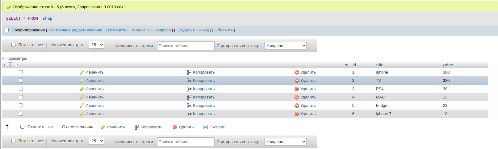
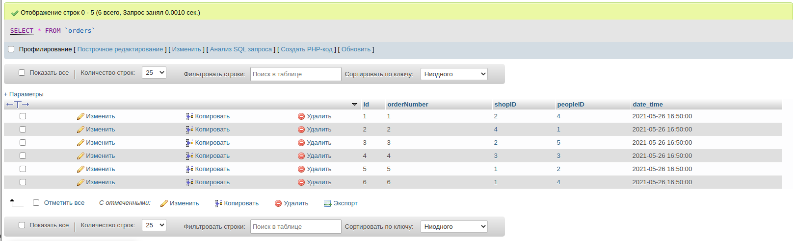
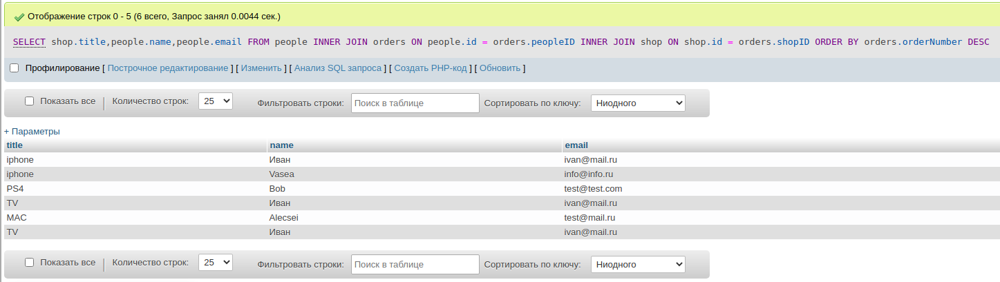
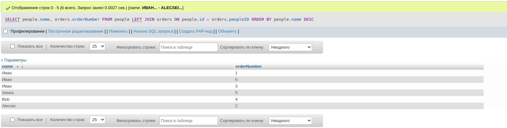
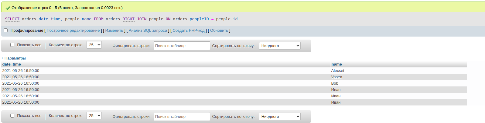
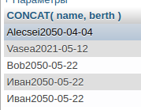
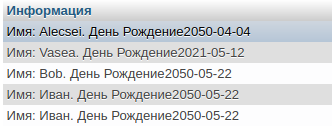
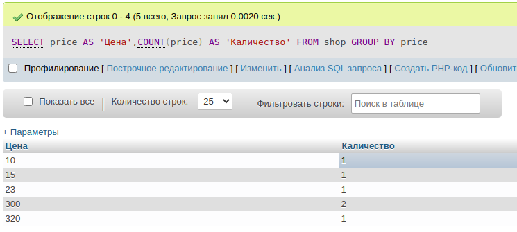
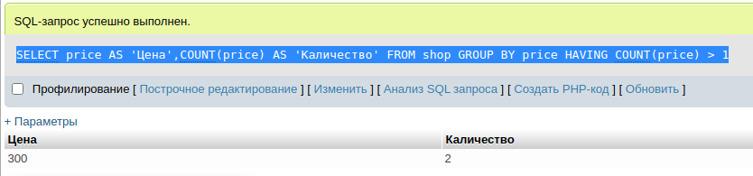

начало
создание базы данных
CREATE DATABASE testing
удалиние базы данных
DROP DATABASE testing
заходим в саму базу банных
создание таблички в базе данных только с id
CREATE TABLE users(
id INT
);
удалиние таблички в базе данных
DROP TABLE users;
создание таблицы с полной информацией
CREATE TABLE people(
id INT NOT NULL AUTO_INCREMENT,
name VARCHAR(30),
email VARCHAR(40),
bio TEXT,
berth DATE,
PRIMARY KEY(id)
);
заходим в саму таблицу
добавить новое поле в таблицу
ALTER TABLE people ADD pass VARCHAR(32);
устанавливаем что berth не может быть нулем
ALTER TABLE people CHANGE berth berth DATE NOT NULL;
удалить поле из таблицы
ALTER TABLE people DROP COLUMN pass;
работа с кантентом поля таблицы
заполняем поля в таблице
INSERT INTO people (name, bio, berth, email) VALUES('Alecsei','просто программист','2050-04-04','test@mail.ru')
заполняем сразу несколько строк
INSERT INTO people (name,email,bio, berth)
VALUES
('Bob','test@test.com','coding','2050-05-22'),
('John','test1@test.com','coding2','2050-05-22'),
('Alex','test2@test.com','coding3','2050-05-22');
обновелние данныйх
обновляем в разделе name его значения в id 5
обнови таблицу people вставь в раздел name значение максим в котором id равен
5
UPDATE people SET `name` = 'максим' WHERE id = 5
обновляем в разделе name и email его значение находит в name максим
обнови таблицу people вставь в раздел name значение Иван и в раздел email
ivan@mail.ru в котором name максим
UPDATE `people` SET `name` = 'Иван' , `email` = 'ivan@mail.ru' WHERE `name` = 'максим'
обновляем в разделе name и email его значение на Иван и ivan@mail.ru находит
все где id больше 4
обнови таблицу people вставь в раздел name значение Иван и в раздел email
ivan@mail.ru все где id больше 4
UPDATE `people` SET `name` = 'Иван' , `email` = 'ivan@mail.ru' WHERE `id` > 4
обновляем в разделе bio его значение на 'просто новый текст' находит все где
name Иван и id равен 5
обнови таблицу people вставь в раздел name значение Иван и в раздел email
ivan@mail.ru все где name Иван и id равен 5
UPDATE `people` SET `bio` = 'просто новый текст' WHERE `name`= 'Иван' AND `id` = 5
удаление данных
удалить только строчку с id 2
DELETE FROM test WHERE id = 2;
удалить все данные с таблицы
DELETE FROM test;
удалить все данные с таблицы(очистка данных из таблицы)
TRUNCATE test;
выбор данных
Выбор всех записей
SELECT * FROM `test`
вывод определенного поля
Выбор всех записей, но лишь некоторые поля
SELECT id, title FROM test;
диапозоны с помощью больше или меньше (><)
Выбор лишь некоторых записей
SELECT * FROM test WHERE id > 6 AND id < 8;
выбрать по параметру
вывод с name Alex с id 5
SELECT * FROM test WHERE name = 'Alex' AND id = 5;
работа с NULL и NOT NULL
выбери в таблице peaple где id не равен 5 и name Иван и bio будет NULL
SELECT * FROM `people` WHERE id <> 5 AND name = 'Иван' AND bio IS NULL
без повторения
вывод всех не повторяющехся елементов name из таблицы people
SELECT DISTINCT name FROM people
лимитирование
первые 2 записи
SELECT * FROM `people` LIMIT 2
первые 2 пропустить вывести следущиее 3 записи
SELECT * FROM `people` LIMIT 2,3
сартирока данных
выдаст сортировки по id по убываению пропуская певые 2 строки и работая с последуйщими 3 строками тоесть (строки с id {4,3,2} )
SELECT * FROM `people` ORDER BY id DESC LIMIT 2,3;
диапозоны
диопозон от 2 до 6
SELECT * FROM `people` WHERE id BETWEEN 2 AND 6;
работа с выборочным елементом
выбери все из таблици peaple где id с номерами 4,5,2,1 отсартируй по убыванию по позиции id и таботой только с первыми 10 елементами
SELECT * FROM `people` WHERE id IN(4,5,2,1) ORDER BY id DESC LIMIT 10
поиск по совпадениям
выбери все из таблицы peaple где name будет чтото с начинаниями Ива и следуйщие буквы(как регулярное вырожение)
SELECT * FROM `people` WHERE name LIKE 'Ива%'
выбери все из таблицы peaple где name будет чтото с буквой {а} в середине (как регулярное вырожение)
SELECT * FROM `people` WHERE name LIKE '%а%'
индексирование
индексирование по name (ускаряет поиск по полю name)
CREATE INDEX Nidex ON people(name)
удалиние индекса
DROP INDEX Ninex ON people;
ссылки с одной таблицы в другую
в данном примере мы сделали ссылку в таблице orders на id других такблиц(FOREIGN KEY(shopID) REFERENCES shop(id) ,FOREIGN KEY(peopleID) REFERENCES people(id))
CREATE TABLE shop(
id INT NOT NULL AUTO_INCREMENT,
title VARCHAR(100),
price INT,
PRIMARY KEY(id)
);
CREATE TABLE orders(
id INT NOT NULL AUTO_INCREMENT,
orderNumber INT,
shopID INT,
peopleID INT,
date_time DATETIME DEFAULT CURRENT_TIMESTAMP ,
PRIMARY KEY(id),
FOREIGN KEY(shopID) REFERENCES shop(id) ,
FOREIGN KEY(peopleID) REFERENCES people(id)
);
проработака
создаем таблицу с таварами
INSERT INTO `shop`(`title`,`price`)
VALUES
('iphone',300),
('TV',320),
('PS4',30),
('MAC',15),
('Fridge',23),
('iphone 7',10)

создаем таблицу с заказами где orderNumber это номер заказа, shopID номер продукта, peopleID номер человека
INSERT INTO `orders`( `orderNumber`, `shopID`, `peopleID`)
VALUES
('0001',2,4),
('0002',4,1),
('0003',2,5),
('0004',3,3),
('0005',1,2),
('0006',1,4);

выбираю поля shop.title people.name people.email
из таблицы peaple { FROM people} (для дальнейшего обеденение с табличкой orders) и обьеденяю эти данные с табличкой orders
и будут выведенны лиш те записи в которых people.id будет равен orders.peopleID (парные)
и все также {FROM people} обьеденяю эти данные с табличкой shop
и будут выведенны лиш те записи в которых shop.id будет равен orders.shopID (парные)
в конце просто сартеруем по убываю по сталбцу orders.orderNumber {но этого не будет видно ))}
SELECT shop.title,people.name,people.email
FROM people
INNER JOIN orders
ON people.id = orders.peopleID
INNER JOIN shop
ON shop.id = orders.shopID
ORDER BY orders.orderNumber DESC

сравниваине LEFT JOIN мы получим все данные с таблички people но возможно не все данные с таблички orders
SELECT people.name, orders.orderNumber
FROM peopl LEFT JOIN orders
ON people.id = orders.peopleID
ORDER BY people.name DESC;

RATH JOIN берет не с таблички orders в с правой таблички people с которй мы сравниваем
SELECT orders.date_time, people.name
FROM orders RIGHT JOIN people
ON orders.peopleID = people.id

псевдонимы
для name даю псивданим имя и для berth даю псевдоним День Родления в таблице people (просто вместо name будет писаться имя )
SELECT name AS 'имя', berth AS 'День Родления' FROM people
CONCAT канкатинирует строки или столбци
SELECT CONCAT('Имя: ', name,'. День Рождение', berth )AS 'Информация' FROM people
без псевдонимав

c псевдонимом

псевдонимы можно использовать как назначение переменных и в наддом случае просто выведяться все параметры (не являеться обьедением , а выборкой из 2 таблицек )
SELECT p.id,p.name ,s.title,s.price FROM people AS p , shop AS s
дополнительные функции
сколько есть полей id в табличке shop {6}
SELECT COUNT(id) FROM shop;
минимальное значение в сталбце price в табличке shop {10}
SELECT MIN(price) FROM shop;
максивмально значение в сталбце price в табличке shop {320}
SELECT MAX(price) FROM shop
среднее орефмитичемкое значение в сталбце price в табличке shop {116.3333} (прибовляет все числа и делит на их количество)
SELECT AVG(price) FROM shop
сумма всех чисел в сталбце price в табличке shop {698}
SELECT SUM(price) FROM shop
все в верхнем регистре
SELECT UCASE(title) FROM shop
все в нижнем регистре
SELECT LCASE(title) FROM shop
грппирует по определенным полям (повторяющихся полей )
SELECT price,COUNT(price) AS 'Каличество' FROM shop GROUP BY price

выведиться тот елемент у которого GROUP BY больше чем 1
SELECT price AS 'Цена',COUNT(price) AS 'Каличество' FROM shop GROUP BY price HAVING COUNT(price) > 1
